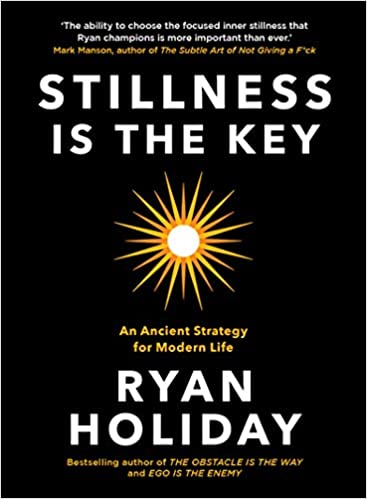

Stillness Is the Key
Hardcover 13.99 $
Instant #1 New York Times Bestseller & Wall Street Journal Bestseller
In The Obstacle Is the Way and Ego Is the Enemy, bestselling author Ryan Holiday made ancient wisdom wildly popular with a new generation of leaders in sports, politics, and technology. In his new book, Stillness Is the Key, Holiday draws on timeless Stoic and Buddhist philosophy to show why slowing down is the secret weapon for those charging ahead.
All great leaders, thinkers, artists, athletes, and visionaries share one indelible quality. It enables them to conquer their tempers. To avoid distraction and discover great insights. To achieve happiness and do the right thing. Ryan Holiday calls it stillness—to be steady while the world spins around you.
In this book, he outlines a path for achieving this ancient, but urgently necessary way of living. Drawing on a wide range of history's greatest thinkers, from Confucius to Seneca, Marcus Aurelius to Thich Nhat Hanh, John Stuart Mill to Nietzsche, he argues that stillness is not mere inactivity, but the doorway to self-mastery, discipline, and focus.
Holiday also examines figures who exemplified the power of stillness: baseball player Sadaharu Oh, whose study of Zen made him the greatest home run hitter of all time; Winston Churchill, who in balancing his busy public life with time spent laying bricks and painting at his Chartwell estate managed to save the world from annihilation in the process; Fred Rogers, who taught generations of children to see what was invisible to the eye; Anne Frank, whose journaling and love of nature guided her through unimaginable adversity.
More than ever, people are overwhelmed. They face obstacles and egos and competition. Stillness Is the Key offers a simple but inspiring antidote to the stress of 24/7 news and social media.